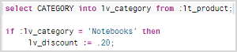
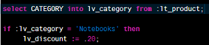
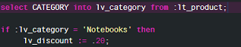

Catalog Settings
Set your general preferences for working with the Catalog tool of the SAP HANA Web-based Development Workbench.
You can open the Settings dialog box by choosing  (Settings) in the toolbar.
(Settings) in the toolbar.
Configure the appearance of the SQL editor.
| Option | Description |
|---|---|
| Editor font size | Use the slider to adjust the font size. |
| Editor background | Select one of the following themes: SAP Cumulus (bright theme) Example: SAP Basement (dark theme with reduced luminosity) Example: SAP Morlock (dark theme, but more colorful and vivid than SAP Basement) Example:  |
Enable the auto-save feature to automatically save SQL console contents to the local browser cache.
| Option | Description |
|---|---|
| Auto-save SQL console to local | Select this checkbox to automatically save SQL console contents to the local storage. |
- All cached file contents are stored unencrypted in the browser's local storage and can therefore be viewed by anyone else using the computer.
- The cache will be cleared as soon as you disable the auto-save option.
Use the following options to determine how SQL query results are displayed in the result table on the Result tab of the SQL console and in the data preview table.
| Option | Description |
|---|---|
| Limit for LOB Columns (Bytes) | Enter the limit in bytes for LOB columns displayed in the result table and data preview table. Values exceeding this limit will be truncated. |
| Representation of Null Value | Change the character used to represent NULL values in the result table and data preview table. The default value is "?". |
| Maximum Result Size | Enter the maximum number of records to be fetched from the database and displayed in the result table and data preview table. |
Use the following option to retrieve a limited number of objects in the catalog browser.
| Option | Description |
|---|---|
| Limit the number of objects to retrieve | Enter the maximum number of objects to be displayed by the
browser. For example, if you enter 10, a maximum of 10 schemas will be displayed and under each schema a maximum of 10 tables, 10 procedures, 10 table types, and so on. If the number of available objects exceeds the number specified here, the message Object limit <number> reached appears. |